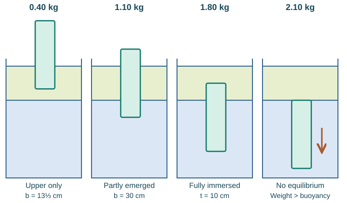

One float can displace more than one liquid
An oil–water boundary is not a solid shelf. A body that intersects the interface receives pressure from each liquid, and its support depends on how much of each fluid it replaces. The same float can occupy different configurations as its load changes.
Recall the force balance
From Archimedes’ principle, static fluid pressure supports the weight of the fluid that would occupy the body. With vertical upward positive, the forces are buoyancy, weight and any vertical support. Density is mass per volume; convert cm² to m² and cm³ to m³ before multiplying. A floating equilibrium without vertical external force has Fᵦ=mg.
Construct a displaced-mass ledger
For two immiscible liquids, divide the displaced region at the interface. Let V₁ and V₂ be the actual displaced volumes. The surrounding pressure field is continuous across a flat interface when interfacial tension is negligible. Replace each displaced region by fluid at rest: together their weight is g(ρ₁V₁+ρ₂V₂). No volume is counted twice. For a constant cross-section A, each Vᵢ=A times the length of the body's intersection with that layer. The exposed air portion contributes negligibly here.

Foundation: one prescribed partition
Two litres of submerged volume, 1 L in liquid of density 700 kg/m³ and 1 L in liquid of density 1100 kg/m³, displace 0.70 and 1.10 kg. Buoyancy is 18 N for g=10 N/kg. This is independent of object material. A freely floating object in that configuration has mass 1.80 kg.
Connected: composite body, support force
A bonded two-material object of total mass 2.5 kg displaces 0.001 m³ of upper liquid (ρ=900) and 0.002 m³ of lower liquid (ρ=1300). Displaced mass=0.9+2.6=3.5 kg; buoyancy exceeds weight by 10 N for g=10. It needs a downward tether of 10 N to stay there. Its internal material boundary need not coincide with the liquid interface.
Advanced: compare possible configurations before solving
A freely floating sealed body of volume 2 L and mass 2.1 kg is placed in two deep liquids of densities 800 and 1200 kg/m³. Even with all 2 L in the upper liquid, displaced mass is only 1.6 kg; that regime cannot support it. The denser liquid alone could displace 2.4 kg; a suitable interface partition exists if geometry permits. For a fully submerged partition, solve 2.1=800V₁+1200(0.002−V₁), giving V₁=0.00075 m³, V₂=0.00125 m³. Check both nonnegative and sum to total volume. This establishes a vertical-force equilibrium, not the stability of every orientation.
Follow the same float through the boundaries
Imagine loading a different, upright, sealed rectangular prism in a large tank. The guide prevents tilt, but supplies no vertical force. Its area is 50 cm² = 0.005 m², its height H is 40 cm, the upper layer thickness d is known (20 cm), and densities are 600 and 1000 kg/m³. Let b be the bottom depth below the free surface, t=b−H the top depth (negative means above the surface). Take g=10 N/kg. We ignore air buoyancy and surface tension; the layer levels remain fixed and the lower layer is deep.

First find the three transition loads
- Bottom just touches the interface: only 0.20 m is in upper liquid. Displaced mass = 0.005×600×0.20 = 0.60 kg.
- Top just touches the free surface: upper length is 0.20 m, lower length is 0.20 m. Displaced mass = 0.005(600×0.20+1000×0.20)=1.60 kg.
- Top just reaches the interface: the entire 0.40 m is in lower liquid. Maximum displaced mass = 0.005×1000×0.40=2.00 kg.
| Float mass | Reasoned equilibrium regime | Upper / lower immersed lengths | Bottom depth |
|---|---|---|---|
| 0.40 kg | Below 0.60: upper only | 13⅓ / 0 cm | 13⅓ cm |
| 1.10 kg | Between 0.60 and 1.60: partly emerged | 20 / 10 cm | 30 cm |
| 1.80 kg | Between 1.60 and 2.00: fully immersed across interface | 10 / 30 cm | 50 cm |
| 2.10 kg | Exceeds maximum: no unsupported equilibrium | At most 0 / 40 cm in lower liquid | Not defined |
Work each regime, not just the formula
Upper only: 0.40=0.005×600×b gives b=0.1333 m, less than d; no lower liquid displaced.
Partly emerged: 1.10=0.005[600×0.20+1000(b−0.20)]. Solve b=0.30 m. Check d<b<H; top is 0.10 m above the free surface.
Fully immersed: 1.80 exceeds 1.60. The previous equation would give b=0.44 m, which puts the top below the free surface. It wrongly counts the entire upper layer. Set t=b−0.40. Upper immersed length=0.20−t, lower length=0.20+t. Solve 1.80=0.005[600(0.20−t)+1000(0.20+t)] = 1.60+2t, so t=0.10 m, b=0.50 m. Check 0<t<d.
No equilibrium: 2.10 kg weighs 21 N. Even complete immersion in the denser liquid supplies only 20 N. The net force is downward.
The decision: a valid equation must match the actual intersection of the float with each layer. A positive algebraic result can still be physically impossible. At the top-flush boundary a further increase in depth moves fluid displacement from upper to lower liquid rather than increasing total volume.
Investigate the load–depth relationship
Predict which region changes when you add load. Move the load control across 0.60, 1.60 and 2.00 kg. The graph shows the displaced mass available at each bottom depth; a floating equilibrium is where it equals the float mass.
At exactly 2.00 kg the float can be neutrally supported anywhere wholly in the lower liquid; depth is not unique. The graph marks the first such position.
Wrong model and changed assumption
An arithmetic mean of liquid densities is correct only for equal displaced volumes with complete immersion. If the upper displacement is three times the lower displacement, the mean is volume-weighted. If the body is partly emerged, total displaced liquid volume is less than body volume. If the average density exceeds even the lower fluid density, no unsupported equilibrium is possible under these assumptions. Air buoyancy, capillary force, walls or tilt constraints can change the force balance; the ideal guide supplies no vertical force.
Try a different condition before the independent challenge
A 1.1 kg sealed body has total volume 1 L and can be supported by a partition of 900 and 1300 kg/m³ liquids. Suppose the lower liquid is replaced with the upper liquid without changing the body. Can it still float unsupported? Explain using the maximum displaced mass, not the old equilibrium.
Compare your explanation
Maximum displaced mass is now 900×0.001=0.9 kg, less than 1.1 kg. There is no unsupported static equilibrium. It sinks or finds another support. The interface shortcut is invalid when the interface disappears.
Next, you will receive an unseen inverse problem: decide the geometry yourself and reconstruct it before any help.
Try the fresh protected challenge Historical source checkpointExposition reference: OpenStax §11.7. Multilayer construction derived from its displaced-fluid principle; no claim that the source explicitly supplies this task.